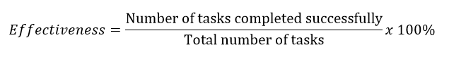
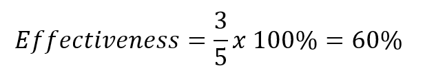
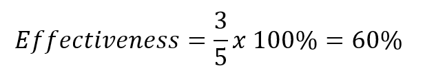
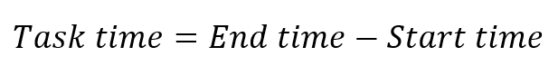
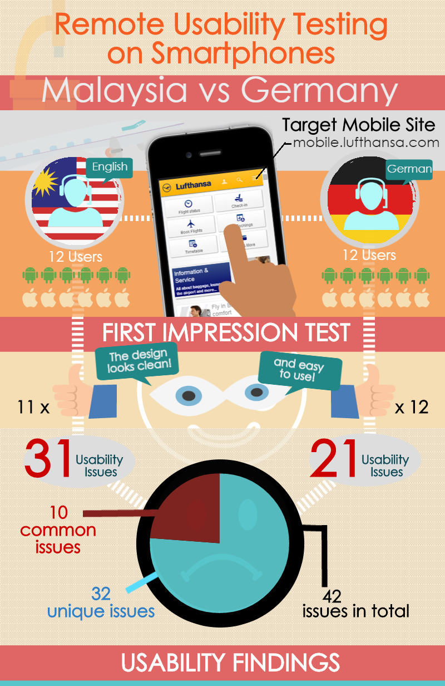

Intro to User Experience (UX) Design
First, a bit about your Instructor.
Jenna Cline
- UX Researcher at Liazon
- Interactive Media Design & Graphic Design
- Environmentalist
- Devoted cat mom
Icebreakers
Fun fact about yourself
What do you do?
What are you hoping to take away from this class?
Course Structure
- Introduction to UX – The Basics
- UX Design Process – The ins and outs
- Research & Understanding - Who, what, where?
- Visual Design – Prototypes and Wireframes
- Usability Testing – Which test is best?
- Metrics Analysis – Validate all the things
https://jennalcline.github.io/gdi-slides-intro-ux/#/

Introduction to UX
The Basics
User Experience (UX) focuses on:
- User needs
- User values
- User abilities
- User limitations
- Business goals and objectives
UX best practices promote improving the quality of the user’s interaction with and perceptions of your product and any related services.
Factors that influence UX

Usability vs UX

Usability falls under the umbrella of UX.
Why does Usability matter?
Web Accessibility
More specifically, people can:
- Perceive, understand, navigate, and interact with the web
- Contribute to the web
Web Accessibility:
Disabilities that affect access on the web

Web Accessibility:
Benefits for users without disabilities
- People using mobile devices
- Elderly people with changing abilities
- People with “temporary disabilities”
- People with “situational limitations”
- People using a slow internet connection
Web Accessibility:
Why is it important?

Web Accessibility:
W3C

UX Design Process
The ins and outs
What does a UX process look like?

UX Design Process:
Strategy

- Stakeholder Discussions
- Project Vision/Goals
- Brand Strategy
- Project Kick-off Meeting
UX Design Process:
Discovery

- Competitive Research
- Surveys/Interviews
UX Design Process:
Analysis

- Personas
- Experience Maps
- Storyboarding
UX Design Process:
Design

- Site Mapping
- Sketching
- Wireframes
- Prototypes
UX Design Process:
Production

- User Testing
- Record Findings
- Metrics Analysis

UX Design Process:
Project Size and Constraints
- Budget
- Time available
- Delivery deadlines
- Available resources
- Access to tools
- Related Projects
Development Process:
Waterfall vs Agile


Research & Understanding
Who, What, Where?
What is UX Research?
The research part of UX is defined as an action where you investigate something systematically.
In UX Research, you apply various techniques to add context and insight into the design process.
Competitive Research

- Ongoing during research process
- Understand strengths and weaknesses
- Track trends and scenarios
Interviews

Persona Example:

Card Sorting

Experience Map Example:

Usability Testing
dfhgdsfhadhadfhad
Why is UX Research important?
UX research removes assumptions from the design process and you will have real data to back up your design decisions.
If research is done correctly it will save your organization valuable time and money.

Visual Design
Prototypes, Mockups and Wireframes
What is a Wireframe?

Visual Design:
What is a Mockup?

Benefits of Mockups
- Intuitive to stakeholders
- Realistic perspective
- Early revisions
Visual Design:
What is a Prototype?

Benefits of Prototypes:
- Type of prototype
- Level of detail and realism
- Functionality to the user
- Lifecycle of the prototype
Visual Design:
Prototyping Methodologies

Paper / Digital / HTML
Visual Design:
Paper Prototyping

Visual Design:
Digital Prototyping

Useful Digital Prototyping tools:
- Balsamiq
- Sketch
- Adobe XD/Illustrator/Photoshop
- Invision App
- Webflow
Visual Design:
HTML Prototyping

Usability Testing
Which test is best?
Usability Testing
Evaluate a product or service by testing with representitive users.
- Observe while participants complete tasks
- Helps to identify usability problems
- Used to collect qualitative and quantitative data
- Gauge user satisfaction
Usability Testing:
Preparing for a usability study
- Define study goals
- Write test plan
- Determine study format
- Define study tasks
- Tools and services
- Recruit participants
- Run a pilot study
- Conduct user test
Usability Testing:
Define study goals
What do you want to test and why?
- Identify questions, concerns, and purpose of research
- Goals determine which UX research method to choose
Usability Testing:
Write a test plan
- Meet with design team, engineers, product managers and other stakeholders.
- Get consensus on what should be tested.
- Start a dashboard to record your testing project plan, and update at each phase of planning.
Usability Testing:
What to include on the test plan dashboard
- Study goals/busniess case
- Research questions
- Description of target audience
- Testing method
- Testing tasks
- Project participants
Dashboard Example:

Usability Testing:
Determine study format
- Qualitative (how, why?)
- Moderated vs unmoderated
- Remote vs live interview
- If live, lab vs field study
- Quantitative (how many, how often?)
- A/B testing
- Analytics
Usability Testing:
Define study tasks
- Tasks should match the study goals
- Can be written as scenarios or specific directive
- Try to avoid biasing the user
Usability Testing:
Types of tasks
| Exploratory | Specific |
|---|---|
| - Open Ended | - Focused on an end point or "right" answer |
| - Many not have a "right" answer | - Can be used for qualitative and quantitative testing |
| - Allows for observation based results | |
| - Used for qualitative testing |
Usability Study:
Tools and services
- UserZoom
- UserTesting
- Loop 11
- Optimal Workshop
- Local Research Company


Usability Testing:
Recruiting participants
| Qualitative Study | Quantitative Study |
|---|---|
| 5-8 | 20 or more |
Jakob Nielsens Alertbox:

Usability Testing:
Recruiting participants
- Age
- Language
- Education
- Technical proficiency
- Employment status
- Gender
- Location
- Income
Usability Testing:
Recruiting participants
- Friends and family
- Co-workers or new hires at your company
- Guerilla testing with the general public
Usability Testing:
Run a pilot study
- Fine-tune tasks
- Can catch problems before the real test
- Ensure that you have the right participants
- Tweak your plan based on pilot study results
Usability Testing:
Conduct the usability test
- For live or moderated testing:
- Brief your participants. Set expectations for your testing session.
- Make sure consent agreements are signed.
- Watch and listen.
For remote testing through a service:
Guerilla Testing
User Testing Session
Paper Prototype Testing
Using Testing Software

Metrics Analysis
Validate all the things
Metrics allow you to:
- Track progress between releases
- Assess your competitive position
- Make decisions before launch
Metrics Analysis:
How to Measure
It may be easy to specify usability metrics, but hard to collect them. Usability is typically measured relative to user’s performance on a given set of tasks.
Usability Metrics should include:
- Effectiveness / success rate
- Efficiency
- Satisfaction
Metrics Analysis:
Completion Rate
Effectiveness can be calculated by measuring completion rate – the fundamental usability metric.
The completion rate is calculated by assigning a binary value of ‘1’ if the test participant manages to complete a task and ‘0’ if they do not.
Completion Rate Equation
You should always aim for a completion rate of 100% if possible, however, the completion rate is highly dependent on the context of the task being evaluated.
Completion Rate Example:


Completion Rate Example:

It is very easy to graphically represent completion rate.
Metrics Analysis:
Measure Task Time

Efficiency is measured in terms of task time – seconds or minutes the participant takes to successfully complete a task.
Time on Task Example:
| Original Design | Redesign | |
|---|---|---|
| Task 1 | 130 sec | 89 sec |
| Task 2 | 240 sec | 121 sec |
| Task 3 | 80 sec | 30 sec |
Metrics Analysis:
Measuring Satisfaction
User satisfaction is measured through standardized satisfaction questions which can be implemented after each task and/or after the usability test is completed.
Metrics Analysis:
Task Level Satisfaction
After a user attempts a task they should immediately be given a questionnaire to measure how difficult the task was.
Single Ease Question Example:

Metrics Analysis:
Test Level Satisfaction
Measured by giving a formalized questionnaire to each test participant at the end of the test session.
One of the most popular post-test questionnaires is the System Usability Scale (SUS). Mostly used to measure the user satisfaction with software, hardware and mobile devices.
SUS Example:

Clicktale

Captures mouse movement, clicks, scrolls, taps, zooms, and tilts that a visitor makes within a web page (desktop or mobile). You can see visitor recordings, visual heat maps and other behavioral reports.
KISSmetrics

A behavioral analytics system that tracks user clicks, pages visited, bounces (1-page visit followed by an exit), and conversions such as purchases, donations, registrations, signups and read times.
Google Analytics

Metrics Analysis:
Summarizing Results
Once you’ve gathered metrics you can use them to formulate an overall conclusion about your designs usability.
You can show the increase or decrease in usability as the results of a redesign.
Metrics Analysis:
Sharing Results
Conveying user research findings can be a challenge – no one wants to read a huge word document or read a long email.
Providing enough detail without boring your audience is a difficult balance.
Metrics Analysis:
Choose a Deliverable Format
- Quick findings
- Detailed report
- Presentation
- Audio and video clips
- Quotations
- Journey / experience map
- Personas
Detailed Infographic Report Example:
Resources Cont.
Resources
| Intro to UX | UX Design Process | Research |
|---|---|---|
| UX Basics | UX Design Process | What is UX Research |
| Facets of UX | User Research Basics | |
| Intro to Usability | Accessibility |
Resources Cont.
| Visual Design | Usability Testing | Metrics |
|---|---|---|
| Wireframes | Test Planning | Usability Metrics |
| Mockups | Usability Checklist | Satisfaction & Performance |
| Prototypes | Quant. Usability | |
| Alert Box | Clicktale | |
| KISSmetrics |